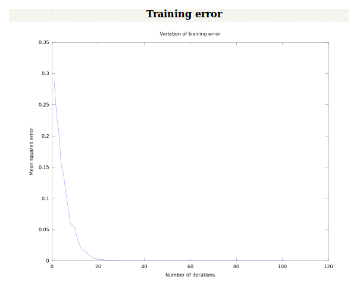
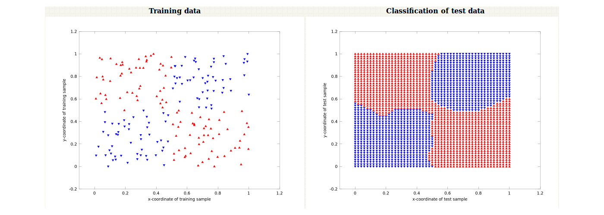

The objective of this experiment is to demonstrate the ability of a multilayer feedforward neural network (MLFFNN) in solving linearly inseparable pattern classification problems.

Architecture of multilayer feedforward neural network
It can be shown that a multilayer feedforward neural network (MLFFNN) with at least two intermediate layers in addition to the input and output layers can perform any pattern classification task. For this to be true, the units in the hidden layers and the output layer must be nonlinear in nature. Such an MLFFNN can be used for pattern mapping tasks. Given a set of input-output pairs of pattern vectors, the task of pattern mapping involves determining the set of weights which can transform the input vectors into the output vectors. Thus, a systematic way of updating the weights is required. To update the weights in a supervised manner, it is necessary to know the desired output for each unit in the hidden and the output layers. Once the desired output for a unit is known, the error between the desired output and the actual output can be computed. This error, in turn, can be used to modify the weights associated with the unit. However, the desired output is known only for the units in the output layer, and not for the units in the hidden layers. This issue is addressed by employing backpropagation algorithm.
 |
Backpropagation learning rule for modifying the weights of MLFFNN
Nature of error surface
In order to obtain the desired outputs for units in the hidden layer, the approach followed is the gradient descent along the error surface. The error is defined as the squared difference between the desired output pattern (which is the given output vector) and the actual output vector obtained at the output layer of the network, given an input pattern. Note that the application of an input pattern produces an output pattern from the network. The sum of errors obtained for each input-output pattern pair can be considered as the overall error. The overall error is a function of all the weights of the MLFFNN. All the weights of the MLFFNN can be represented as a weight vector. The weight vector is a point in the multidimensional weight space. Thus, the overall error as a function of the weight vector can be viewed as an error surface, for different values of the weight vector. The goal is to obtain that value of the weight vector which results in a minima on the error surface. Thus, the weights need to be modified in a manner so as to traverse the error surface in such a way that the minimum is achieved.
Generalized delta rule
The rule is basically a gradient descent along the the error surface. For a given set of input-output pattern pairs, the overall error is computed. Note that the overall error is a function of the weight values. What is required is the gradient of the error surface with respect to the weights. Once the gradient is obtained, the weights can be modified such that the error surface is traversed in a direction that is against the gradient. The overall error is differentiated with respect to the weights leading to the output layer, and with respect to the weights of the hidden layers. This results in an expression for the gradient, whose negative is used to modify the weights. Note that the units in the hidden layer and the output layer need to be differentiable, because the overall error is differentiated with respect to the weights. The increment in the weight connecting the units \(j\) and \(i\) is given by:
$$ \Delta w_{ij}(m) = -\eta\frac{\partial E(m)}{\partial w_{ij}}, \qquad(1)$$
where \(m\) is the step number and \(\eta \gt 0\) is a learning rate parameter, which may also vary for each presentation of the training pair.
ĂÂ
Discussion on backpropagation rule
Features of backpropagation
The key idea is the backpropagation of error from the output layer to the hidden layers, which is possible because of the nonlinear nature of the units. If the units were to be linear, the MLFFNN transforms into a linear associative network, and its ability to generate complex decision boundaries to solve nonlinearly separable classification problem is lost. The modification of weights can be done in a pattern mode or in a batch mode. In the pattern mode, the weights are updated once for every input vector. In the batch mode, the weights are updated once after all the input vectors have been presented to the network.
There is no proof of convergence of the backpropagation learning. Some heuristic criteria are used to stop the process of learning.
Performance of backpropagation learning
The performance of backpropagation learning law depends on the initial settings of the weights, learning rate parameter, output functions of the units, and presentation of the training data. The performance also depends on the specific pattern recognition task (such as classification and mapping), or specific application (such as function approximation and probability estimation). The value of the learning rate depends on the distribution of the input data. The learning rate can be changed as a function of the iteration. A number of refinements can be added to the backpropagation learning, in order to speed up the learning.

Illustration of MLFFNN for classifying linearly inseparable data into classes
Consider two linearly inseparable classes, where each class consists of two-dimensional input pattern vectors. An example of two-class classification problem is shown below. The input vectors belonging to each class are shown in different colours in the following figure (Figure 1).
 |
The mean squared error obtained during training as a function of the number of iterations is shown in the following figure (Figure 2).
|  |
Convergence of weights and threshold value
The following figure (Figure 3) shows the initial data and the classification of the test data.
|  |

This is a 3 layer MLFFNN with one hidden layer, one input layer, and one output layer.
Select the problem type and the number of nodes in the hidden layer, and click on train MLFFNN.
Now click on test MLFFNN to test the network and to see the results of pattern classification.

Variation of error as a function of time-step/epoch
(a) Observe the variation in case of pattern mode and batch mode. In the former case, the variation of error would be less smoother than in the latter case.
(b) In each case, observe the number of epochs required for the error to converge to a given value.
Convergence of weight values
(a) Observe the plot of individual weight values as functions of time-step/epoch. Each weight value may converge over time, or oscillate within limits, indicating that it is near a minimum in the error surface.
(b) Observe the number of epochs required for convergence in the case of pattern mode and batch mode.
Cross-validation
(a) For the subset of input patterns, observe the values of the corresponding outputs, and compare the obtained outputs with desired outputs. What is the error between the two ?
(b) Is the cross-validation error lesser for batch mode or for the pattern mode ?
Comment on the nature of the error surface for a multilayer feedforward neural network.
Discuss various interpretations of the results of backpropagation learning.
What is meant by generalization in feedforward neural networks? Why should it depend on the size and efficiency of training set, architecture of the network and the complexity of the problem?
Generalize the XOR problem to a parity problem for N (\(\gt\)2) variables by considering a network for the two variables first, and then extending the network considering the output of the first network as one variable and the third variable as another. Repeat this for N=4 and design a network for solving the parity problem for 4 variables.

B. Yegnanarayana, Artificial Neural Networks, New Delhi, India : Prentice-Hall of India, pg. 117, 1999.
S. Haykin, Neural Networks: A Comprehensive Foundation, New York: Macmillan College Publishing Company Inc., 1994.
A.P. Russo, "Neural networks for sonar signal processing", in IEEE Conference on Neural Networks for Ocean Engineering, vol. 51 (Washington, DC), 1991.
I. Guyon, "Applications of neural networks to character recognition", Int. J. Pattern Recognition a n d Artificial Intelligence, vol. 5, pp. 353-382, 1991.
D.R. Hush, J.M. Salas, and B. Horne, "Error surfaces for multilayer perceptrons, in International Joint Conference on Neural Networks, vol. 1 (Seattle), IEEE, New York, pp. 759-764, 1991.
P.J. Werbos, The Roots of Backpropagation: From Ordered Derivatives to Neural Networks and Political Forecasting; New York: John Wiley, 1994.